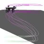

Camera interpolation
If controlling a single camera is difficult, constructing a camera
path is even more so. The traditional approach is to specify a
sequence of key frames, then interpolate from one key frame to the
next. This works well for some camera motions, but can produce
unexpected results for certain motions. A simultaneous rotation and translation can
result in the object of interest flying off of the screen. A center of projection change
results in substantial jitter as well.
 We present two solutions to
the camera interpolation problem. The first uses linear matrix interpolation to
interpolate the camera matrices. The interpolation can be a linear
interpolation, a spline-weighted blend, or an interpolating blend. The
second approach performs the interpolation in image space.
Image-space interpolation also provides additional control over
the trajectories and sizes of selected objects in screen space. This
lets the user use far fewer
key frames. To support image-space interpolation we developed the
Four-point camera representation, which is more suited to solving image-space constraint problems.
See also camera control
and non-linear projection.
Image-space interpolation movies
The first three movies demonstrate the different behaviour of
three different image-space solvers and traditional key framing. The
next two movies demonstrate directly editing the camera using
image-space constraints.
- Translation and rotation example.
- Translation with image-space manipulation example.
- Center of projection example.
- Editing a single camera position with four screen-space constraints.
- Editing a single camera position with eight screen-space constraints.
- Comparison of traditional key framing to image-space key framing on the following task: Make the table create an S shape while simultaneously rotating the table by 180 degrees and shrinking it.
- Comparison of traditional key framing to image-space key framing for editing an existing camera sequence which consists primarily of translations.
- Determining how many key frames need to be added to produce visually smooth results for the simultaneous rotate and translate example.
- Determining how many key frames need to be added to produce visually smooth results for the center of projection example.
- Demonstration of the stages that make up the screen-space interpolation approach (screen-space interpolation in the forward and backward directions, followed by a blend and repeated filtering and fitting).
Linear matrix interpolation movies
- Two examples of using linear matrix interpolation to create inbetween frames.
-
Papers
- Screen-space interpolation. Includes a comparison of different screen-space camera constraint solvers.
- Linear matrix interpolation. Includes some numbers on how to get the most out of your linear matrix interpolation. Also includes a fix if you need to rotate by more than 90 degrees.
Students